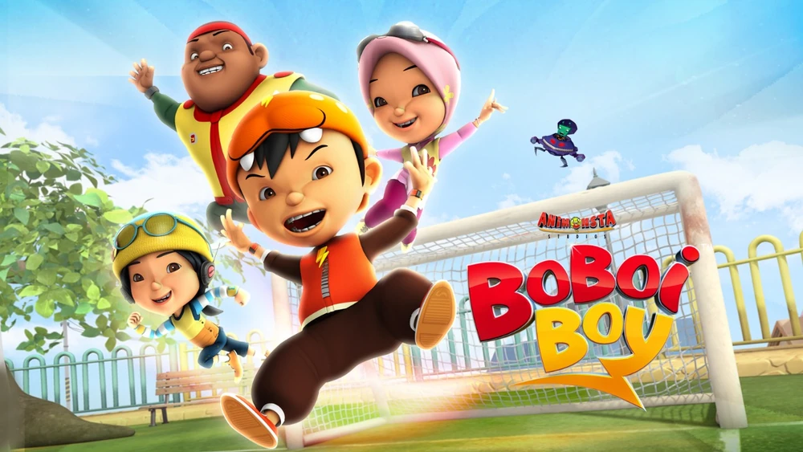

"Aku BoBoiBoy, superhero Bumi. Sepertinya aku perlu bersiap. Semakin banyak orang dari luar sana yang datang. Aku perlu melindungi teman-temanku, aku perlu melindungi Bumi, dan aku perlu melindungi galaksi."
Selama liburan musim panas, BoBoiBoy mengunjungi kakeknya, Tok Aba di Pulau Rintis. Di sana, dia bertemu dengannya untuk segera berteman dan rekan satu tim: Yaya, Ying, dan Gopal. Sementara itu, alien jahat bernama Adu Du, alien yang bertekad untuk mengambil alih Bumi, membutuhkan biji kakao untuk menyalakan mesinnya. Dia kemudian mengirimkan asisten robotnya, Probe, untuk mendapatkan beberapa sumber energi. Probe kemudian mengambil kakao dari toko Kakao Tok Aba dan membawanya kembali ke pesawat ruang angkasa. Menyadari bahwa seseorang telah mencuri kakao, BoBoiBoy mengikuti Probe dan berhasil mencurinya kembali, hanya untuk robot bulat misterius untuk mengikutinya keluar, salah mengira dia adalah tuannya.
Mayoritas musim ini adalah BoBoiBoy dan teman-temannya berurusan dan mengelola dengan kekuatan super baru mereka, mendapatkan sekutu baru seperti Papa Zola. BoBoiBoy bahkan berhasil memperkuat bentuk elementalnya, mengubah bentuk dan meningkatkan kemampuan mereka. Di akhir musim, setelah kekalahan Adu Du, BoBoiBoy kembali ke kota, mengucapkan selamat tinggal kepada teman-temannya dan berjanji untuk berkunjung kapan pun dia bisa.
Kemudian, Adu Du berusaha membuat semua orang di kelas BoBoiBoy gagal dalam ujian mereka, alien baru bernama Ejo Jo melakukannya. Setelah pertempuran, dia memaksa BoBoiBoy dan teman-temannya untuk melepaskan kekuatan mereka dan Ochobot, bahkan memanggil robot perusaknya sendiri, PETAI yang membunuh Probe. BoBoiBoy dan teman-temannya berjuang dengan gagah berani, tapi semua orang kecuali BoBoiBoy, Fang, Ochobot dan Adu Du ditangkap, memaksa mereka untuk melarikan diri ke sarang tersembunyi Adu Du.
Setelah merancang sebuah rencana, BoBoiBoy mengalihkan perhatian PETAI sementara Fang menggunakan waktu untuk memanggil Naga Bayang yang kuat. Rencananya berhasil, tapi Fang pingsan karena kelelahan. Namun, saat hal-hal mulai mendongak, Ejo Jo sudah cukup dan mengenakan jasnya, melengkapi dirinya dengan semua Jam Kekuatan yang dicuri dan melibatkan BoBoiBoy dalam pertempuran sengit.
Setelah mengambil dari musim lalu, BoBoiBoy mengalami masalah dalam berurusan dengan Ejo Jo, yang telah mulai memanfaatkan potensi teman-temannya yang belum dimanfaatkan. Sama seperti dia akan dikalahkan, Adu Du (dalam Mukalakus) menyela pertarungan untuk membantu BoBoiBoy, sebagai balas dendam atas penghancuran Probe. Tok Aba dan Ochobot bisa membebaskan teman-teman BoBoiBoy tapi mengungkapkan bahwa ia telah mencuri Jam Kekuatan Fang dan menjebak mereka dalam Kokun Bayang. Dengan bantuan Tok Aba, Papa Zola, dan Iwan, mereka dibebaskan dan menerima Ejo Jo sekali lagi dan berhasil mengusirnya.
BoBoiBoy kemudian membantu Adu Du perbaiki Probe, yang secara efektif membawanya ke sisi yang baik. Ia dikenal oleh warga Pulau Rintis sebagai superhero. Dia kemudian melawan Koko Jumbo, sebuah percobaan yang ditinggalkan oleh Adu Du untuk mencuri Kakao. Namun ketenaran dan tanggung jawab yang baru menyebabkan stres untuk membangun dan BoBoiBoy mulai mengalami mimpi buruk, secara tidak sengaja berubah menjadi BoBoiBoy Api saat dia tidur dan menyebabkan kekacauan massa.
Akhirnya, keterlibatan BoBoiBoy dalam kebakaran acak telah diungkap, menunjukkan bahwa ia telah berubah menjadi BoBoiBoy Api dalam tidurnya karena betapa stresnya dirinya. Adu Du mengambil ini sebagai kesempatan untuk mengenalkan BoBoiBot sebagai superhero baru. Karena niat jahat BoBoiBot, ia menyerang Gopal dan BoBoiBoy yang berubah menjadi Api di bawah tekanan untuk mencoba melawan, tapi terungkap bahwa BoBoiBot lebih ahli dalam BoBoiBoy sebelumnya. Dengan malu, BoBoiBoy telah disingkirkan, karena kota, bahkan teman sendiri, menganggap BoBoiBot sebagai pahlawan baru mereka. Akhirnya, Adu Du dan BoBoiBoy mengungkapkan sifat sejati mereka dan memaksa warga untuk membayar usaha mereka. BoBoiBoy kemudian dihadapkan oleh Probe, yang telah datang sendiri, untuk memberi tahu dia tentang kekuatan Airnya dan dengan demikian mengaktifkannya. Setelah beberapa latihan padat, BoBoiBoy Air mampu mengalahkan BoBoiBot.
| Nama BoBoiBoy | Petir |
|---|
| Angin |
| Tanah |
| Api | dll |